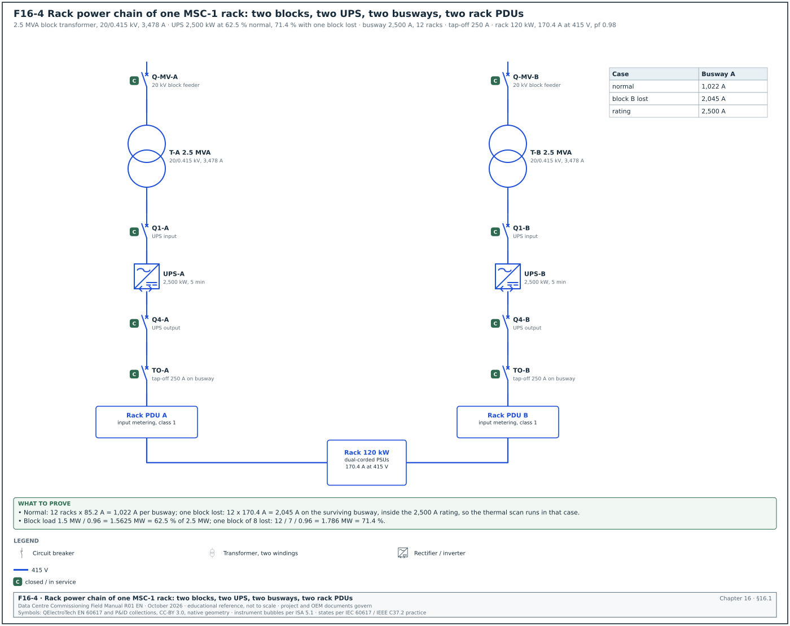
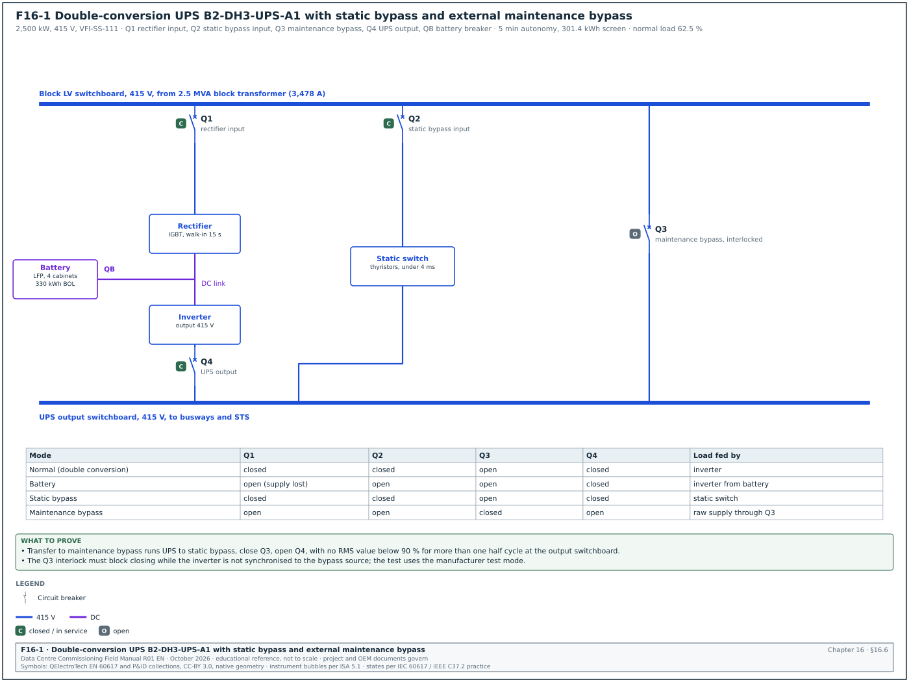
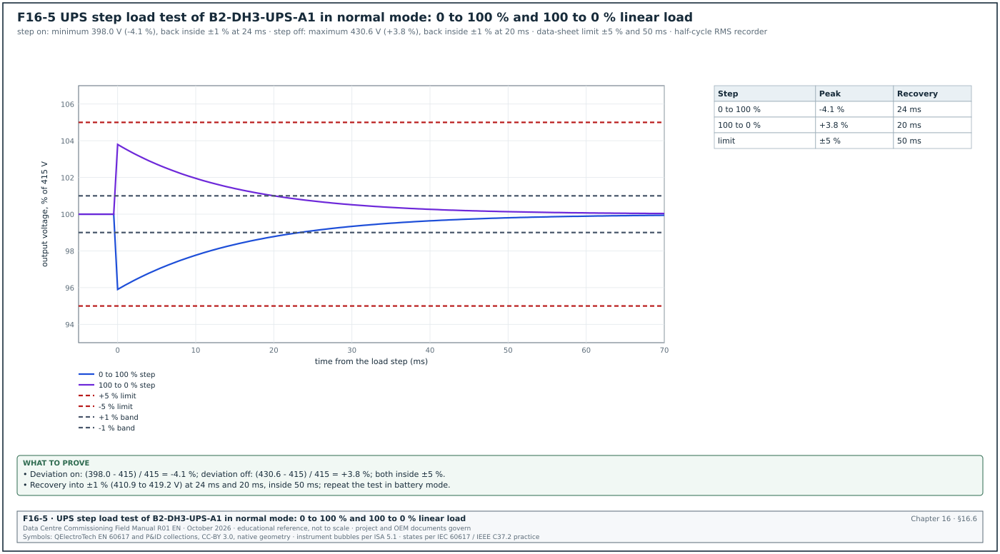
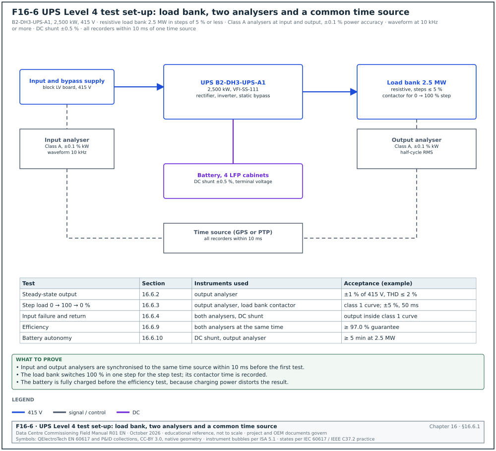
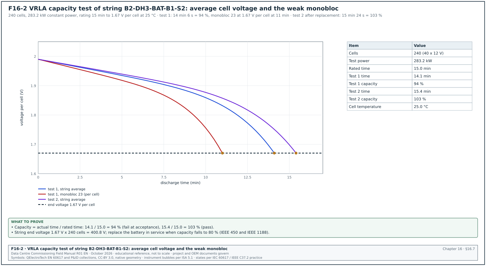
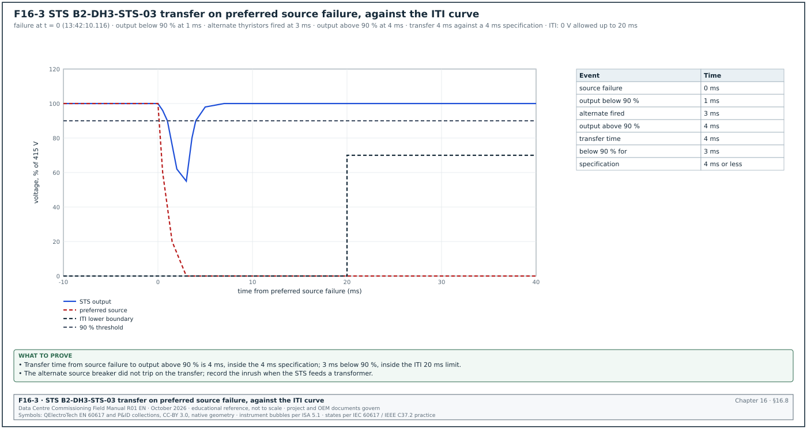
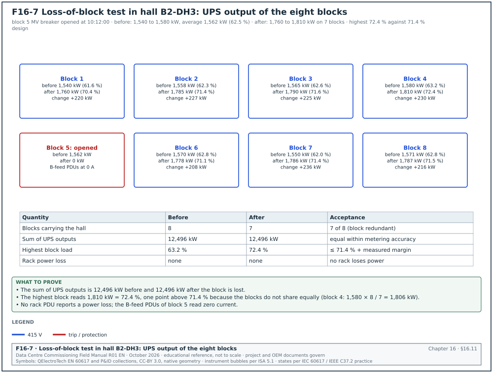

16.0Scope of this chapter
This chapter covers the part of the electrical system that keeps the information technology (IT) load supplied without a break. The equipment is the static uninterruptible power supply (UPS) modules, their batteries, the static and automatic transfer switches, and the distribution from the UPS output to the rack power distribution units (PDUs). The chapter gives the tests from factory to integrated systems test. For each test it gives the instrument, set-up, applied value, duration, acceptance value and source, and the filled record.
- The power chain. From the block transformer to the rack, with the MSC-1 block numbers.
- UPS types and IEC 62040-3 classification. voltage and frequency independent (VFI), voltage independent (VI) and voltage and frequency dependent (VFD); the output waveform letters; the dynamic performance classes 1 to 3.
- UPS factory acceptance test. What the witness sees at the factory and what the site repeats.
- UPS installation and start-up. Level 2 and Level 3 checks.
- UPS functional tests. Steady-state, efficiency, step load, mode transfers, bypass, maintenance bypass, ECO mode, parallel redundancy, input harmonics, generator compatibility and full-load battery autonomy.
- Batteries. Vented and valve-regulated lead-acid (VRLA), nickel-cadmium and lithium-ion; IEEE 450, IEEE 1188, IEEE 1106, UL 1973 and UL 9540A; the capacity test; ohmic measurements; battery management system (BMS) checks for lithium-ion.
- Transfer switches. Static transfer switches (STS), automatic transfer switches (ATS) and rack transfer switches, with their timing tests.
- Rack power distribution. Remote power panels (RPP), busway and tap-off units, rack PDUs and the metering accuracy classes.
- Monitoring. Alarms and points to the electrical power monitoring system (EPMS).
- Records, errors, KPIs and the site checklist.
Documents and standards used: IEC 62040-1 (UPS safety), IEC 62040-3:2021 (UPS performance and test methods), IEEE 450 (vented lead-acid maintenance and testing), IEEE 1188 (VRLA), IEEE 1106 (nickel-cadmium), IEEE 485 (lead-acid sizing) and IEEE 1635 (battery ventilation and thermal management). The chapter also uses UL 1973 (stationary batteries), UL 9540 and UL 9540A (energy storage systems and thermal runaway fire test method), NFPA 855 (stationary energy storage installation), IEEE 446 (emergency and standby power, the Orange Book) and the Information Technology Industry Council (ITI) curve, formerly the Computer and Business Equipment Manufacturers Association (CBEMA) curve. It also uses ANSI C12.20 and IEC 62053-21 and -22 (meter accuracy classes), IEC 61439-6 (busbar trunking), ANSI/NETA Acceptance Testing Specifications (ATS), PUIL 2020 and the UPS, battery and power distribution unit (PDU) manufacturers' commissioning documents.
16.1The power chain from block transformer to rack


16.1.1Why the chain exists
The utility and the generators cannot supply power without a break. A utility fault clears in 100 ms or more, and a generator plant needs about 7 to 25 seconds to be on the bus (chapter 15). IT power supplies ride through about 20 ms of zero voltage at full load (the ITI curve value; confirm against the ITI curve note). The UPS bridges that gap by converting stored DC energy to AC with no break, and it filters the voltage disturbances of the supply.
16.1.2The MSC-1 block design
In the MSC-1 worked example, each hall of 12 MW IT is supplied by 8 power blocks. Each block has a 2.5 MVA transformer (20/0.415 kV, 3,478 A on the low-voltage side) and a 2.5 MW UPS with 5 minutes of battery autonomy. The design is block-redundant: 7 blocks carry the full hall load and the eighth is the redundant block.
| Quantity | MSC-1 value | Derivation |
|---|---|---|
| Hall IT load | 12 MW | ledger |
| Blocks per hall | 8 | ledger |
| IT load per block, normal | 1.5 MW | 12 / 8 |
| UPS output load per block, normal | 1.5625 MW = 62.5 % of 2.5 MW | 1.5 / 0.96 power supply unit (PSU) efficiency |
| UPS load with one block lost | 1.786 MW = 71.4 % | 12 / 7 / 0.96 |
| Strict 2N comparison | 125 % | half the blocks carrying the hall: 12 / 4 / 0.96 / 2.5 |
| Battery energy screen per block | 301.4 kWh | 2.5 MW × 5/60 h = 208.3 kWh, divided by 0.96 × 0.80 × 0.90 |
| Rack power (type R) | 120 kW | ledger |
| Rack current at 415 V | 170.4 A | 120,000 / (√3 × 415 × 0.98) |
| Rack power (type S) | 142 kW, 201.6 A | ledger |
The battery screen of 301.4 kWh reproduces with an inverter efficiency of 0.96, an end-of-life capacity factor of 0.80 (the IEEE 450 and IEEE 1188 replacement point) and a design margin factor of 0.90. These factors are the screening basis; the battery vendor's sizing to IEEE 485 (lead-acid) or the vendor method (lithium-ion) governs.
Figure F16-4 shows the rack power chain from the block transformer to the rack PDU.
16.1.3Components in the chain
| Component | Function | Main commissioning tests |
|---|---|---|
| Block transformer and LV switchboard | 20/0.415 kV supply | chapter 13 and 14 |
| UPS input and bypass breakers | feed the rectifier and the static bypass | chapter 14 breaker tests |
| UPS modules | double conversion with battery support | 16.3 to 16.6 |
| Battery strings and battery breakers | stored energy | 16.7 |
| UPS output switchboard | distributes the UPS output | chapter 14 |
| Maintenance bypass | isolates the UPS for work | 16.6.6 |
| STS (where used) | selects between two UPS sources for single-corded loads | 16.8 |
| Busway and tap-off units, or RPPs | distribution in the hall | 16.9 |
| Rack PDUs or power shelves | supply the IT power supplies | 16.9 |
16.2UPS types and the IEC 62040-3 classification
16.2.1Input dependency
IEC 62040-3 classifies a UPS by how its output depends on the input. The classification has three parts written as AAA-BB-CC.
| Code | Name | How it works | Output depends on input |
|---|---|---|---|
| VFD | voltage and frequency dependent (offline or standby) | load fed from mains; inverter starts on mains failure | voltage and frequency |
| VI | voltage independent (line-interactive) | inverter or regulator corrects voltage; frequency follows mains | frequency |
| VFI | voltage and frequency independent (double conversion) | rectifier and inverter in series; output generated by the inverter | neither |
Data-centre UPS modules are VFI in their normal mode. Several models also have an eco mode in which the load runs on the static bypass with the inverter on standby. In that mode the UPS behaves as VFD or VI and its classification is different.
16.2.2Output waveform and dynamic class
- Output waveform (BB). The first letter is for normal mode, the second for stored energy mode. S means sinusoidal (total harmonic distortion (THD) within the IEC 62040-3 limit with linear and reference non-linear load), X means sinusoidal with linear load only, Y means non-sinusoidal.
- Dynamic output performance (CC). Three digits: the first for a change of operating mode (for example normal to battery), the second for a step of linear load in normal or battery mode, the third for a step of reference non-linear load.
- Classes. Each digit is 1, 2 or 3. Class 1 is the tightest output tolerance curve and is required for sensitive critical loads. Class 3 permits an interruption of up to 10 ms with the voltage regulated to +10 %, −20 % within 100 ms (Schneider white paper summary of IEC 62040-3). The class 1 and class 2 curves are in the standard (class 2 permits an interruption of up to 1 ms with ±20 % regulation within 10 ms, Schneider white paper WP1, edition not stated; confirm against IEC 62040-3:2021 5.3.4 and Figure 3, dynamic output performance class 2).
Example: A specification asking for VFI-SS-111 means a double-conversion UPS with sinusoidal output in normal and battery mode, and class 1 dynamic performance for mode change, linear load step and non-linear load step.
16.2.3What the site tests prove against the classification
| Classification element | Site test that checks it | Section |
|---|---|---|
| VFI | input voltage and frequency varied (or generator transient) while the output stays inside tolerance | 16.6.8 |
| SS | output voltage THD with linear and non-linear load in normal and battery mode | 16.6.2 |
| First digit 1 | input failure and return: output stays inside class 1 curve | 16.6.4 |
| Second digit 1 | linear load step 0 → 100 → 0 % | 16.6.3 |
| Third digit 1 | non-linear load step (accepted from the type test where the specification allows, because site non-linear load banks are rare) | 16.6.3 |
16.3UPS factory acceptance test
16.3.1FAT content
- Visual and documents. Nameplate, serial numbers, firmware version, wiring against drawings, torque marks, labels.
- Insulation and dielectric test. As in the manufacturer routine test (IEC 62040-1).
- Steady-state output. Output voltage and frequency at 0 %, 50 % and 100 % load.
- Efficiency. At 25 %, 50 %, 75 % and 100 % load in double-conversion mode and, where offered, in eco mode, measured to IEC 62040-3 (Annex on efficiency measurement; confirm the annex letter in the 2021 edition).
- Step load. 0 → 100 → 0 % linear load with the waveform recorder.
- Mode transfers. Normal → battery → normal, normal → bypass → normal, inverter fault → bypass.
- Heat run. Full load for at least 4 hours (8 hours on some hyperscale specifications) with thermal imaging of the power connections at the end.
- Parallel system test. Where modules are paralleled, load sharing and the loss of one module.
- Communications. Modbus TCP and Simple Network Management Protocol (SNMP) points against the point list.
16.3.2What the site repeats and why
The FAT runs on the factory's load bank and the factory's supply. The site tests repeat the tests that depend on the site: the real input supply (utility and generator), the real battery and its cables, the real output distribution, the protection settings and the communications. The commissioning manager accepts the factory acceptance test (FAT) values for type-tested characteristics (for example the non-linear load step) where the specification allows. The commissioning manager lists them in the test plan as "accepted from FAT".
Worked example: FAT witness planning for one building. Building B2 has 3 halls × 8 blocks = 24 UPS systems of 2.5 MW. The factory has two test bays and needs 2 days per system with an 8-hour heat run. The FAT programme is 24 × 2 / 2 = 24 working days. The commissioning authority (CxA) witnesses the first system in full and one system in every six, which gives 4 witnessed FATs and 20 reviewed reports.
16.4UPS installation checks (Level 2)
- Room conditions. The room is clean, dry and at its design temperature before the UPS is energised. Dust from construction in power electronics causes failures, so the room has its final ceiling and floor finishes.
- Positioning and clearances. Front and rear clearances per the manufacturer's installation manual and PUIL 2020 working space requirements.
- Cable terminations. Input, bypass, output and battery cables are terminated with the specified lugs and torqued to the manufacturer's values; torque marks are applied.
- Battery cable polarity. The positive and negative DC cables are checked for polarity with a voltmeter before the battery breaker is closed.
- Earthing. UPS frame and the neutral arrangement (the neutral earthing point on the output for a transformerless UPS) match the earthing design (chapter 17).
- Insulation resistance. Cables are tested at 1,000 V DC before connection to the UPS (power electronics are disconnected or the manufacturer's method is used).
- Ventilation and cooling. The UPS room cooling is running; air temperature at the UPS air inlet is within the manufacturer's range (for example 20 to 30 °C).
- Labelling. Breaker labels, single-line diagram on the wall, arc-flash labels from the study (chapter 14).
| Field in ELE-L2-UPS checklist | Type | Example value |
|---|---|---|
| UPS tag | text | B2-DH3-UPS-A1 |
| Model, rating, firmware | text | 2,500 kW / 0.415 kV, firmware 4.12.3 (example) |
| Input cable insulation resistance (IR) (phase-earth, phase-phase) | number (MΩ) | > 2,000 MΩ at 1,000 V |
| Battery cable polarity | pass or fail | pass |
| Torque record reference | text | TQ-B2-DH3-UPS-A1-01 |
| Room temperature at energisation | number (°C) | 24.5 |
| Open items | list | 1 (rear clearance obstructed by cable tray support) |
16.5UPS start-up (Level 3)
Owner: UPS original equipment manufacturer (OEM) start-up engineer, with the CxA present.
Steps:
- Pre-energisation check. The engineer checks the internal connections, the DC capacitors' discharge state and the control wiring. Time limit: half a day per system.
- Energise the rectifier. The input breaker closes; the DC bus charges; the rectifier starts. DC bus voltage is recorded.
- Battery connection. The battery breaker closes with the DC bus voltage within the manufacturer's window of the battery voltage, to avoid inrush.
- Inverter start. The inverter starts and synchronises to the bypass. The output voltage, frequency and phase rotation are recorded.
- Settings. The engineer enters the settings: output voltage, bypass synchronisation window, slew rate, battery parameters (number of cells or modules, float and boost voltages, temperature compensation, end-of-discharge voltage), parallel configuration, eco mode enabled or disabled.
- Alarm and event log. The log is cleared and the time is synchronised with the site time server.
- Settings record. The settings are exported to a file and printed as the UPS settings record.
| UPS settings record field | Example value (B2-DH3-UPS-A1) |
|---|---|
| Output voltage | 415 V |
| Bypass synchronisation window | ±2 % (49.0 to 51.0 Hz) |
| Slew rate | 1 Hz/s |
| Battery type and configuration | lithium-ion, lithium iron phosphate (LFP), 4 cabinets in parallel, 1 string per cabinet (example) |
| End-of-discharge voltage | per battery vendor |
| Eco mode | disabled (owner decision) |
| Parallel mode | single module (block design) |
| Battery temperature compensation | not applicable to lithium-ion; −3 mV/°C per cell for VRLA example |
| Firmware version | 4.12.3 |
16.6UPS functional tests (Level 4)




16.6.1Test set-up
Figure F16-6 shows the test set-up: the load bank, the two analysers, the DC shunt and the common time source. Figure F16-1 shows the UPS with its rectifier, inverter, battery, static bypass and external maintenance bypass, and the breaker positions in each operating mode.


| Item | Requirement |
|---|---|
| Load bank | resistive, 2.5 MW in steps of 5 % or less, contactor switching for step tests; resistive-reactive where the specification asks for a power factor test |
| Power quality analyser at input | IEC 61000-4-30 Class A, power accuracy ±0.1 % of reading or better for efficiency, calibrated within 12 months |
| Power quality analyser at output | as above, plus waveform capture at ≥ 10 kHz for transients |
| DC measurement | DC clamp meter or shunt with ±0.5 % accuracy; DC voltage on the battery terminals |
| Thermal camera | ±2 °C |
| Time | all recorders synchronised to the same time source within 10 ms |
16.6.2Steady-state output
- Run at three loads. 0 %, 50 % and 100 % load, each for 15 minutes.
- Read. Output voltage per phase, voltage unbalance, frequency, voltage THD.
- Acceptance. Output voltage within ±1 % of 415 V (410.9 to 419.2 V); frequency 50.0 Hz ±0.1 % when free-running; voltage THD ≤ 2 % with linear load (example project values from the specification and the manufacturer's data sheet).
16.6.3Step load test
Steps:
- 0 → 100 % step. With the UPS in normal mode at 0 % load, switch 100 % load in one step. Record the output root mean square (RMS) voltage every half cycle and the waveform.
- 100 → 0 % step. Remove 100 % in one step.
- Repeat in battery mode. With the input breaker open (UPS on battery), repeat 0 → 100 % and 100 → 0 %; keep the battery mode time short.
- Read. Maximum deviation of the output RMS voltage and the time to return within ±1 %.
Acceptance: Output voltage inside the class 1 dynamic tolerance curve of IEC 62040-3 for a linear load step. Manufacturers' data sheets commonly state a deviation within ±5 % and recovery within about 20 to 50 ms for a 100 % linear step (the data-sheet values are the project values; the curve is IEC 62040-3:2021 Figure 2, dynamic output performance class 1, in 5.3.4).
Worked example: Step test record for B2-DH3-UPS-A1 in normal mode (Figure F16-5 plots both steps). The 0 → 100 % step gave a minimum RMS output of 398.0 V (−4.1 %) and the output returned within ±1 % (above 410.9 V) after 24 ms. The 100 → 0 % step gave a maximum of 430.6 V (+3.8 %) and recovery after 20 ms. The data sheet states ±5 % and 50 ms, so both steps pass.
16.6.4Input failure and return (mode transfer)
Steps:
- Input failure. At 100 % load, open the UPS input breaker (and the bypass breaker for a separate bypass input, to simulate a full supply loss).
- Record. Output voltage waveform during the transfer to battery; DC current and battery voltage.
- Battery mode. Run for 2 minutes on battery.
- Input return. Close the input breaker. The rectifier walks in (ramps its input current) over the set walk-in time, for example 10 to 20 s.
- Repeat on the generator. In L5, the same test is done with the generator as the returning source (16.6.8).
Acceptance: No disturbance to the output outside the class 1 curve on transfer to battery and back. The rectifier walk-in follows the set time, and the battery charge current after return is limited to the set value.
16.6.5Transfer to static bypass and back
- Manual transfer to bypass. From the UPS front panel, transfer to bypass at 100 % load. The output transfers with no break when the inverter and bypass are synchronised.
- Transfer on inverter fault. Simulate an inverter fault (manufacturer test function). The load transfers to bypass. Acceptance: transfer within the manufacturer's time (for example less than 4 ms for an unsynchronised fault transfer, or with no break when synchronised).
- Transfer on overload. Apply 110 % and 125 % load where the load bank allows; the inverter carries the overload for the time in the data sheet (for example 10 minutes at 110 %, 60 s at 125 %), then transfers to bypass.
- Bypass not available. Open the bypass input, then apply an overload: the inverter shuts down at its limit and the alarm is raised. This test is done only with the manufacturer's agreement and is recorded as a "bypass unavailable" behaviour check.
- Return to inverter. The UPS returns to inverter automatically after the overload clears (where set).
16.6.6Maintenance bypass
The maintenance bypass switches (or breakers) let the operator isolate the UPS for work while the load stays on the raw supply. An interlock (for example a key interlock or an electrical interlock) prevents the maintenance bypass from closing while the UPS output is out of synchronism with the bypass source.
- Transfer to maintenance bypass. Follow the operating procedure: UPS to static bypass, close maintenance bypass, open UPS output breaker. The load sees no break.
- Interlock test. Try to close the maintenance bypass with the UPS on inverter and not synchronised (manufacturer test mode); the interlock prevents it.
- Return. Reverse the sequence; the load sees no break.
- Procedure check. The written method of procedure (MOP) matches the labels on the switchgear and the sequence that worked.
Acceptance: No interruption measured at the output switchboard during the sequence (no RMS value below 90 % for more than one half cycle); interlock prevents the unsafe operation; MOP signed as validated.
16.6.7Eco mode and parallel redundancy
- Eco mode (if enabled). With the UPS in eco mode (load on bypass), simulate a bypass supply failure; the inverter takes the load. Measure the output disturbance. Eco mode transfers commonly fall into a dynamic class 2 or 3. The manufacturer's IEC 62040-3:2021 classification declaration for eco mode states the class for the offered UPS. Many owners disable eco mode; the decision is recorded in the owner's project requirements (OPR).
- Parallel systems. Where modules are paralleled in one system, check load sharing (each module within ±5 % of the average at 50 % and 100 % load, example project value) and the loss of one module (the others carry the load with no output disturbance outside the class 1 curve).
- Block redundancy on MSC-1. The MSC-1 design uses one UPS per block with no paralleling. The redundancy is tested at L5 by failing a whole block and checking that the racks stay on their second feed and the remaining blocks carry 71.4 % (16.1.2).
16.6.8Generator compatibility test
Purpose: Prove that the UPS and the generator plant work together. The rectifier walks in without upsetting the generator, the bypass stays synchronised within the window, and the input current harmonics do not distort the generator voltage.
Steps:
- Run on generator. In the L5 utility failure test, record at the UPS input: voltage, frequency, current, current THD and the rectifier walk-in ramp.
- Synchronisation. Record the time from generator bus live until the UPS reports "bypass synchronised".
- Harmonics. At 100 % load on generator, measure input current THD and the voltage THD at the generator bus.
Acceptance: Input current THD at full load ≤ 5 % for an active-front-end (IGBT) rectifier (example project value; IEEE 519 is the usual reference for the limit at the point of common coupling). The generator bus voltage THD is ≤ 5 %. The UPS synchronises to the generator within 60 s of bus live (example project value). The generator does not trip during walk-in.
16.6.9Efficiency test
Steps:
- Set load. 25 %, 50 %, 75 % and 100 % of rated output in double-conversion mode with the battery fully charged (charging power distorts the result).
- Stabilise. Run 15 minutes at each step.
- Measure. Read input and output active power on the two analysers at the same time for 5 minutes and average.
- Calculate. Efficiency = output kW / input kW.
Acceptance: Efficiency at each load not lower than the guaranteed value minus the measurement tolerance agreed in the contract.
Worked example: At 62.5 % load (the MSC-1 normal block load), the input analyser reads 1,601.9 kW and the output analyser reads 1,562.5 kW. Efficiency = 1,562.5 / 1,601.9 = 97.54 %. With two analysers each at ±0.1 % of reading, the efficiency uncertainty is about ±0.14 percentage points (root sum of squares), so the result lies between 97.40 % and 97.68 %. The guarantee is 97.0 % at 50 % to 75 % load, so the test passes.
16.6.10Full-load battery autonomy test
- Charge. The battery is fully charged (at least 24 hours on float for VRLA, or 100 % state of charge reported by the lithium-ion BMS).
- Load. 100 % of rated output (2.5 MW), or the design load stated in the specification.
- Discharge. Open the input and bypass breakers. Record time, DC voltage, DC current and battery temperature every 30 s.
- End. Stop at the end-of-discharge alarm or at the design autonomy plus a margin agreed with the battery vendor.
- Recharge. Record the recharge current and the time to full charge.
Acceptance: Autonomy ≥ the design value at the design load (5 minutes on MSC-1), corrected to the reference temperature where the battery temperature differs from 25 °C.
Worked example: B2-DH3-UPS-A1 on a new lithium-ion battery ran 7 minutes 40 s at 2.5 MW to the end-of-discharge alarm, at a battery temperature of 26 °C. The design is 5 minutes at end of life with the 0.80 capacity factor. A new battery should give at least 5 / 0.80 = 6.25 minutes, so the measured 7.67 minutes passes and shows a margin over the end-of-life basis.
16.7Batteries


16.7.1Battery technologies in data centres
| Technology | Cell nominal voltage | Typical life | Main standards | Commissioning focus |
|---|---|---|---|---|
| Vented lead-acid (VLA, flooded) | 2.0 V | 15 to 20 years | IEEE 450, IEEE 484 (installation), IEEE 485 (sizing) | electrolyte level and specific gravity, ventilation for hydrogen, capacity test |
| Valve-regulated lead-acid (VRLA) | 2.0 V (12 V monoblocs of 6 cells) | 5 to 10 years design life, less at high temperature | IEEE 1188, IEEE 1187 (installation) | float voltage, ohmic values, temperature, capacity test |
| Nickel-cadmium (NiCd) | 1.2 V | 20 years | IEEE 1106, IEEE 1115 (sizing) | electrolyte, capacity test (end voltage about 1.0 to 1.14 V per cell) |
| Lithium-ion, lithium iron phosphate (LFP) | 3.2 V | 10 to 15 years | UL 1973, UL 9540, UL 9540A, NFPA 855, IEEE 1635 (ventilation) | BMS functions, protection, communication, capacity, fire protection interface |
| Lithium-ion, nickel manganese cobalt (NMC) | 3.6 to 3.7 V | 10 to 15 years | as above | as above, with stricter thermal runaway controls |
16.7.2Battery installation checks (Level 2)
- Rack and cabinet. Racks are anchored as designed, seismic restraints fitted, and the rack is earthed.
- Cell or module numbering. Each cell or module carries a number in the order of the series string, starting at the positive end. The numbering matches the record sheet.
- Inter-cell connections. Connections are torqued to the battery manufacturer's value. The connection resistance of each inter-cell connector is measured with a micro-ohmmeter.
- Polarity. The string voltage and polarity are checked before connection to the UPS.
- Ventilation. For lead-acid batteries, the room ventilation rate is calculated for hydrogen evolution (IEEE 1635 and IEC 62485-2 give the method) and the extract fan runs. For lithium-ion, the ventilation and exhaust follow the UL 9540A test results and NFPA 855.
- Spill containment and eyewash. For vented lead-acid and NiCd: spill containment and an eyewash station.
- Fire protection. The detection and suppression in the battery room match the design (chapter 20); for lithium-ion, the off-gas detection is installed where the design requires it.
Acceptance: Inter-cell connection resistance: each connection resistance within 10 % of the average of all connections of the same type, or within the manufacturer's maximum (IEEE 450 and IEEE 1188 practice; the manufacturer's installation instructions give the maximum). A connection above the limit is cleaned, re-torqued and measured again.
Worked example: String B2-DH3-BAT-A1-S1 has 239 inter-cell connectors. The average connection resistance is 42 µΩ. Connector 117-118 reads 51 µΩ, which is 21 % above the average. The technician cleans and re-torques it; the new reading is 43 µΩ, within 10 % of the average, and both readings are written on the record sheet.
16.7.3Lead-acid capacity test (IEEE 450 and IEEE 1188 method)
Purpose: Measure the capacity of the battery as a percentage of its rated capacity. The result proves that the battery meets the design autonomy and gives the baseline for later tests.
Trigger: Acceptance test at installation (where the specification requires it), the first performance test within 2 years, then periodic tests, with shorter intervals when capacity falls (16.7.5).
| Instrument | Accuracy | Purpose |
|---|---|---|
| Battery load unit (constant current or constant power) | ±1 % of setting | discharges the battery at the rated rate |
| Cell voltage monitoring (multi-channel logger or the battery monitoring system) | ±0.1 % of reading, ±1 mV | records each cell or monobloc voltage |
| DC clamp or shunt | ±0.5 % | records the discharge current |
| Temperature probes | ±0.5 °C | records the electrolyte or cell case temperature (pilot cells) |
| Timer | 1 s | records the time to the end voltage |
Steps:
- Charge and rest. Equalise or fully charge the battery per the manufacturer, then leave it on float for at least 72 hours (lead-acid practice) before the test.
- Record initial values. Float voltage of each cell, temperature of pilot cells (at least 10 % of cells), ambient temperature.
- Choose the rate. Use a rate that matches the duty (for a UPS, the 5- to 15-minute rate at the manufacturer's end voltage). IEEE 450 prefers a test duration similar to the duty. For tests shorter than 1 hour, the rate-adjusted method applies the temperature correction to the discharge rate before the test. For tests of 1 hour or longer, the time-adjusted method corrects the measured time.
- Disconnect from the load. Isolate the battery from the UPS (or run the UPS on a load bank only), connect the load unit.
- Discharge. Start the discharge and the timer at the same moment. Hold the current or power constant within ±1 %.
- Record during the test. All cell voltages at least every 10 % of the expected test time and at the end; record any cell that falls quickly.
- End the test. Stop when the string voltage reaches the end voltage multiplied by the number of cells (for example 1.67 V per cell × 240 cells = 400.8 V for a short-rate UPS test; the end voltage depends on the rate and the manufacturer's table).
- Calculate. Capacity = (actual time to end voltage / rated time) × 100 % for the rate-adjusted method. For the time-adjusted method, IEEE 450 divides by the temperature correction factor for the electrolyte temperature (confirm the formula and the factor table against the capacity-test clause of the IEEE 450 edition in the contract). Some vendor notes write the factor as a multiplier, so check how the table defines the factor before using it.
- Recharge. Recharge immediately and record the recharge time.
Acceptance: At acceptance, capacity ≥ 100 % of rated (or the manufacturer's guaranteed value; some manufacturers ship at 90 % and reach 100 % after a few cycles). In service, replace the battery when capacity falls to 80 % of rated (IEEE 450 and IEEE 1188 replacement criterion).
Worked example: VRLA string B2-DH3-BAT-B1-S2 has 240 cells (40 monoblocs of 12 V). The manufacturer's table gives 15 minutes at 1,180 W per cell to 1.67 V per cell at 25 °C. The average cell temperature on the test day is 25 °C, so no rate adjustment is needed. The load unit is set to 240 × 1,180 = 283.2 kW constant power. The string reaches 400.8 V at 14 minutes 6 s. Capacity = 14.1 / 15.0 × 100 = 94 %. The acceptance criterion is 100 % at installation, so the result fails. The cell records show monobloc 23 falling below 1.67 V per cell at 11 minutes while the others were at 1.78 V. Monobloc 23 is replaced, the string is recharged, and the test is repeated; the second test gives 15 minutes 24 s, which is 103 %.
16.7.4Ohmic measurements and float checks
- Ohmic baseline. At installation, after the first full charge, measure the internal ohmic value (impedance, conductance or resistance; use the same method and the same instrument model for all later readings) of every cell or monobloc. This is the baseline.
- Float voltage. Record each cell or monobloc float voltage. Acceptance: within the manufacturer's float band (for example 2.25 V per cell ±0.05 V for a VRLA cell at 25 °C, example manufacturer value).
- Float current. For VRLA, record the string float current; a rising float current with rising temperature is a warning of thermal runaway.
- Temperature. Record the negative terminal temperature of each monobloc. Acceptance: within 3 °C of the average of the string (practice value; the battery manufacturer's instructions give the limit).
- Investigation trigger. An ohmic value change of 20 % or more against the baseline is a common trigger for investigation and a capacity test (Fluke guidance referencing IEEE practice; confirm against IEEE 1188 Annex and the manufacturer's limit).
16.7.5Test intervals for lead-acid batteries
| Test | Vented lead-acid (VLA), IEEE 450 | VRLA (IEEE 1188) |
|---|---|---|
| Acceptance capacity test | at installation where the specification requires it | at installation where the specification requires it |
| First performance test | within the first 2 years of service | within the first 2 years of service |
| Periodic performance test | at intervals not greater than 25 % of the expected service life (and not more than 5 years) | at intervals not greater than 25 % of the expected service life or 2 years, whichever is less |
| Annual performance test | when capacity is below 90 % or has dropped more than 10 % since the last test, or at 85 % of service life | when capacity has dropped more than 10 % or at 85 % of service life |
| Ohmic and float checks | quarterly | quarterly |
The intervals follow the IEEE schedule as summarised by Fluke; confirm against the current editions of IEEE 450 and IEEE 1188.
16.7.6Lithium-ion battery commissioning
A lithium-ion UPS battery is a system of cells in modules and modules in racks or cabinets. Each module has a module BMS, and a rack or system BMS controls a DC contactor or breaker. The BMS protects the cells against overcharge, overdischarge, overcurrent and overtemperature by opening the contactor. If the BMS fails, the cell protection fails, so the commissioning tests the BMS functions one by one.
Steps:
- Documents. Collect the UL 1973 listing for the battery, the UL 9540A test report for the cell, module and unit, and the vendor's installation manual. The fire protection design (chapter 20) uses the UL 9540A results.
- Module installation. Check the serial numbers of every module against the packing list and record the state of charge at delivery (lithium-ion is shipped at a partial state of charge for transport rules, for example 30 % or less).
- Communication. Connect the BMS to the UPS and to the EPMS. Each module reports cell voltages and temperatures. Acceptance: all cells report, values within the vendor's band (for LFP, cell voltages within about 20 mV of each other at rest; the vendor's BMS manual gives the band).
- Contactor test. Open and close each rack contactor from the BMS and from the emergency stop. Acceptance: contactor opens within the vendor's time, the UPS reports the rack lost and the remaining racks carry the load.
- Protection simulation. With the vendor's tool, simulate cell overvoltage, cell undervoltage, cell overtemperature, module communication loss and an insulation fault. Each simulation produces the alarm or trip in the vendor's protection table.
- Balancing. Charge to 100 % and let the BMS balance the cells. Record the cell voltage spread after balancing.
- Capacity test. Discharge at the UPS design power to the vendor's end-of-discharge condition; record time, energy delivered (kWh) and the lowest cell voltage. Acceptance: energy and time ≥ the vendor's guaranteed values.
- Fire interface. Off-gas detection (where installed) and the fire alarm interface: a simulated off-gas alarm trips the battery contactors and sends the alarm per the cause-and-effect matrix (chapter 20).
| Lithium-ion BMS protection test | Simulated value (example LFP) | Expected response |
|---|---|---|
| Cell overvoltage warning | 3.55 V | warning to UPS and EPMS |
| Cell overvoltage trip | 3.65 V | charge stopped, contactor opens if not cleared |
| Cell undervoltage trip | 2.50 V | discharge stopped, contactor opens |
| Cell overtemperature warning | 50 °C | warning |
| Cell overtemperature trip | 60 °C | contactor opens |
| Module communication loss | disconnect one module cable | rack alarm; rack contactor opens after the vendor's delay |
| Insulation fault (DC earth fault) | insert test resistor | alarm |
These values are examples; the vendor's protection table governs.
Worked example: Energy check for one MSC-1 block. The vendor guarantees 330 kWh usable at beginning of life for B2-DH3-BAT-A1 (4 cabinets). The discharge at 2.5 MW UPS output for 7 minutes 40 s delivered 2,500 / 0.96 × 7.667 / 60 = 332.8 kWh DC. The DC shunt measured 333.5 kWh. The measured value is above the guarantee, and it is above the 301.4 kWh screen of 16.1.2.
16.7.7Battery discharge curve
Figure F16-2 shows the discharge curves of the VRLA string of 16.7.3: the first test with the weak monobloc and the repeat test after replacement. Read the curve shape and the end time. A string voltage that falls steeply at the end means one or more cells reached their end early.
16.8Transfer switches: STS, ATS and rack transfer switches


16.8.1Types and timing
| Device | Where used | How it transfers | Typical transfer time (manufacturer's data sheet governs) |
|---|---|---|---|
| Static transfer switch (STS), silicon-controlled rectifier (SCR) based | between two UPS sources for single-corded loads or for a PDU transformer | thyristors on the preferred source turn off, thyristors on the alternate source turn on (break-before-make) | about 4 ms or less (under a quarter cycle) |
| Automatic transfer switch (ATS), mechanical, open transition | mechanical loads, house loads between utility and generator | mechanism opens one source and closes the other | 100 ms to several seconds, plus set time delays |
| ATS, closed transition | as above, where a break on return is not wanted | both sources closed for a short overlap when in sync | overlap ≤ 100 ms typical |
| ATS with delayed transition | motor loads | opens, waits for residual voltage to decay, then closes | set delay, for example 1 to 5 s |
| Rack transfer switch (rack ATS) | single-corded IT equipment in a dual-fed rack | relay or hybrid switching | about 8 to 16 ms |
16.8.2ATS time delays
| Timer (common name) | Purpose | Example setting |
|---|---|---|
| Engine start delay | ignore short utility dips | 1 to 3 s |
| Transfer to emergency delay | wait after the generator is ready | 0 to 5 s |
| Retransfer to normal delay | wait for a stable utility | 30 min (owner decision; 5 min is common for testing) |
| Engine cool-down | run unloaded before stop | 5 min |
| Neutral position delay (delayed transition) | let motor residual voltage decay | 1 to 3 s |
| In-phase monitor | transfer only when the two sources are within a set angle | ±10° (example) |
16.8.3STS transfer timing test
Purpose: Prove that the STS transfers the load to the alternate source within the specified time with the output inside the ITI curve, for every transfer cause.
The instrument is a power quality analyser or oscilloscope recorder with ≥ 10 kHz sampling on the preferred source, alternate source and STS output voltages; current probe on the output.
Steps:
- Load. Connect a load bank at 100 % of the STS rating (or the design load).
- Preferred source failure. Open the preferred source upstream breaker. Record the output waveform.
- Preferred source undervoltage. Reduce the preferred source to the transfer threshold where a test source allows (or use the manufacturer's simulation).
- Manual transfer. Transfer from the panel with both sources healthy and in phase; the output shows no break.
- Out-of-phase sources. With the sources out of phase beyond the set limit, a manual transfer is blocked; an automatic transfer on source failure follows the out-of-phase logic (break-before-make with a delay).
- Retransfer. Restore the preferred source; the STS returns after the retransfer delay.
- Downstream transformer. If the STS supplies a transformer, record the inrush on the transfer, because an out-of-phase transfer into a transformer gives a large inrush that can trip the upstream breaker.
Acceptance: Transfer time from source failure to the output inside tolerance ≤ the specified value (for example 4 ms). Output voltage inside the ITI curve: no zero voltage longer than 20 ms, no voltage below 70 % for longer than 0.5 s (ITI curve; confirm against the ITI note); no upstream trip on transfer.
Worked example: STS B2-DH3-STS-03 rated 400 A (Figure F16-3 plots the record). The preferred source failed at 13:42:10.116 and the output voltage fell below 90 % at 13:42:10.117. The alternate thyristors fired at 13:42:10.119 and the output was back above 90 % at 13:42:10.120. The transfer time from source failure to the output back inside tolerance was 4 ms, inside the 4 ms specification. The output was below 90 % for 3 ms, far inside the 20 ms ITI zero-voltage limit. The upstream breaker on the alternate source did not trip, so the result passes.
16.8.4ATS functional test
- Normal source failure. Open the normal source upstream breaker; the engine start signal is issued after the start delay; the ATS transfers after the generator is ready and the transfer delay.
- Times. Record each timer with a stopwatch or the recorder against the setting. Acceptance: within ±10 % of the setting or ±1 s, whichever is larger (example project tolerance).
- Return. Restore the normal source; the ATS retransfers after the retransfer delay; the engine cools down and stops.
- In-phase or closed transition. Record the phase angle at transfer (in-phase monitor) or the overlap time (closed transition).
- Bypass-isolation. Where the ATS has a bypass-isolation switch, bypass the ATS and withdraw it; the load stays supplied.
- Signals. Position, source available and alarm signals reach the BMS and the EPMS.
16.9Rack power distribution: RPP, busway, tap-off units and rack PDUs
16.9.1Distribution options
| Option | Description | Commissioning tests |
|---|---|---|
| Remote power panel (RPP) | panelboard in the hall with branch circuit breakers and branch circuit monitoring | breaker tests, branch monitoring accuracy, labels |
| Busway with tap-off units | overhead busbar trunking with plug-in tap-off units at each rack | joint torque, insulation resistance, phasing, tap-off breaker, thermal scan under load |
| PDU with transformer | floor-standing unit with a transformer and panelboards | transformer tests, inrush, breaker tests, metering |
| Rack PDU | strip or unit in the rack with outlets, metering and network card | input current reading, outlet switching, network and alarms |
| Power shelf (high-density racks) | rack-mounted rectifier shelf for a DC busbar in the rack (48 V or 800 V DC on next-generation racks) | rectifier redundancy, DC output, busbar connection, vendor procedure |
16.9.2Busway installation and tests
- Joint torque. Every busway joint is torqued to the manufacturer's value and marked. Some designs use a break-off bolt head that shows the torque was reached.
- Insulation resistance. At 1,000 V DC for 1 minute, phase to phase and phase to earth, with tap-off units removed or open. Acceptance: ≥ 100 MΩ per run (example project value; a value per run length in the busway manufacturer's instructions governs where given).
- Phasing. Check the phase order at each tap-off position so that three-phase rack loads see the same rotation and the single-phase loads are spread as designed.
- Tap-off unit. Check the breaker rating and setting against the rack schedule (for example 250 A for a type R rack at 170.4 A), the interlock that prevents inserting or removing the unit under load (manufacturer design), and the metering module.
- Thermal scan. At the L4 or L5 heat-load test, scan every joint and tap-off with the busway at its design load. Acceptance: temperature rise compared with similar joints below 10 K; a joint more than 10 K above its neighbours is investigated (ANSI/NETA ATS thermographic survey practice uses temperature differences between similar components to rank action; confirm the bands against ANSI/NETA ATS-2025 Table 100.18).
Worked example: Busway B2-DH3-BW-A04 carries 12 racks at 170.4 A each, but in normal operation the A feed in a dual-fed rack carries half: 12 × 85.2 = 1,022 A. When the block that feeds the B side of these racks is lost, the A feed carries the full rack. The current is then 12 × 170.4 = 2,045 A, within a 2,500 A busway rating. The thermal scan runs at the one-block-lost case of the L5 test, and the commissioning manager records the busway current at the time of the scan.
16.9.3Rack PDU checks
- Inventory. Model, serial number, firmware and media access control (MAC) address recorded for every rack PDU (on a 100-rack hall with two PDUs per rack, that is 200 records).
- Input reading. With a load (rack load bank or the IT equipment), compare the PDU input current reading with a calibrated clamp meter. Acceptance: within the PDU's stated accuracy (many rack PDUs state ±1 % billing-grade accuracy to IEC 62053-21 Class 1; the PDU data sheet states the class).
- Outlet switching (switched PDUs). Switch each outlet off and on from the management interface; record the result.
- Alarm thresholds. Configure the warning and critical current thresholds (for example 80 % and 90 % of the input breaker rating) and test one threshold with a load.
- Network and protocol. SNMP (preferably SNMPv3), Modbus TCP or Redfish as specified; the data centre infrastructure management (DCIM) system or the EPMS reads the points.
- Time. Network Time Protocol (NTP) configured; the PDU time matches the site time server within 1 s.
16.9.4Metering accuracy classes
| Standard | Class | Error limit at rated conditions | Typical use in the power chain |
|---|---|---|---|
| ANSI C12.20 | 0.1 | ±0.1 % | utility and revenue meters (North American practice) |
| ANSI C12.20 | 0.2 | ±0.2 % | revenue and main meters |
| ANSI C12.20 | 0.5 | ±0.5 % | sub-meters |
| IEC 62053-22 | 0.2S, 0.5S | ±0.2 %, ±0.5 % (with current transformer (CT) operated meters, the "S" means accuracy is also specified at low current) | main switchboard and UPS output meters |
| IEC 62053-21 | 1, 2 (0.5 in the 2020 edition) | ±1 %, ±2 % | RPP branch monitoring, rack PDU input metering |
Confirm the classes and error limits against the current editions of ANSI C12.20 and IEC 62053-21 and -22.
16.9.5Metering accuracy test
Purpose: Prove that the energy and power readings used for power usage effectiveness (PUE), capacity and billing are within their class.
Steps:
- Reference meter. Use a portable reference meter or power analyser at least three times more accurate than the meter under test (for a class 0.5S meter, a reference of ±0.1 % or better).
- Connect. Connect the reference in the same circuit: voltage on the same busbar, current by calibrated current clamps or a test CT on the same conductor.
- Test points. Read at about 10 %, 50 % and 100 % of the circuit's expected load, at the real power factor.
- Error. Error = (meter reading − reference reading) / reference reading × 100 %.
- CT ratio check. If the error is the same at every load point, the likely cause is a wrong CT ratio or a wrong multiplier in the meter set-up.
Acceptance: Error within the class limit plus the reference uncertainty.
Worked example: UPS output meter of B2-DH3-UPS-A1 (class 0.5S) reads 1,571.0 kW; the reference analyser reads 1,562.5 kW. Error = (1,571.0 − 1,562.5) / 1,562.5 = +0.54 %. The class limit is 0.5 % and the reference uncertainty 0.1 %, so the result is accepted up to 0.6 %. The reading of +0.54 % is accepted, but the same +0.5 % offset appears at the 10 % and 100 % load points. The technician compares the meter set-up with the CT test certificate: the CT has a measured ratio error of −0.45 % that the meter set-up does not correct. After the certificate ratio is entered in the meter's CT correction field, the meter reads +0.08 % at all three load points. The record shows both results.
16.10Monitoring: UPS, battery, STS and PDU points to EPMS
16.10.1Minimum alarm list
| Point | Source | Priority | Action expected from operations |
|---|---|---|---|
| UPS on battery | UPS | 1 | check input supply and generator status |
| UPS on static bypass | UPS | 1 | investigate cause; load is unprotected |
| UPS on maintenance bypass | output switchboard auxiliary contact | 1 | confirm planned work |
| Battery low (end of discharge approaching) | UPS or BMS | 1 | prepare for load loss |
| Inverter fault | UPS | 1 | call service |
| Overload | UPS | 2 | review load |
| Battery temperature high | battery monitoring or BMS | 2 | check room cooling |
| Lithium-ion rack contactor open | BMS | 1 | autonomy reduced; call vendor |
| STS on alternate source | STS | 2 | check preferred source |
| STS sources out of synchronism | STS | 2 | check UPS bypass sources |
| Rack PDU input above 80 % | rack PDU | 3 | capacity review |
| Rack PDU input above 90 % | rack PDU | 2 | rebalance load |
16.10.2Point-to-point test
- Force each alarm. The manufacturer's engineer forces each alarm at the UPS, STS, BMS or PDU (test function or real condition).
- Check at the EPMS. The alarm appears at the EPMS with the correct text, priority and time stamp within 1 s of the device event log time.
- Analogue values. kW, kVA, voltage, current, battery voltage, battery current, state of charge and autonomy remaining are compared with the device display.
- Loss of communication. Disconnect the network card; the EPMS raises a communication alarm within its timeout.
- Record. The point-to-point sheet (chapter 25 format) with each point, value, pass or fail and signatures.
16.11Integrated tests for the UPS and rack power chain (Level 5)
The table lists the Level 5 scenarios for the UPS chain. Figure F16-7 shows the readings of the loss-of-block test in the worked example below.


| Scenario | Action | Measurements | Acceptance (MSC-1 example) |
|---|---|---|---|
| Utility failure with hall at full load | open both utility incomers | UPS on battery time, generator bus live time, UPS return to normal, rack inlet power at a sample of racks | no rack loses power; UPS returns to normal mode within the battery autonomy |
| Loss of one block | open the block transformer MV breaker | remaining 7 blocks' load, busway currents, rack PDUs on the surviving feed | each remaining UPS ≤ 71.4 % plus the measured margin; no rack power loss |
| UPS to static bypass on generator | transfer one UPS to bypass while on generator | bypass synchronisation, output disturbance | no break; output inside ITI curve |
| Battery discharge to generator start failure | block generator start, let the UPS discharge to its end-of-discharge alarm (on load banks only) | autonomy, alarms | autonomy ≥ 5 min; alarms received in order |
| STS transfer under load | open the preferred source of an STS | output transfer time | ≤ 4 ms; downstream loads stay on |
| Maintenance bypass procedure | operations staff follow the MOP | output disturbance, interlocks | no break; MOP validated |
Worked example: Loss-of-block test in hall B2-DH3. Before the test, the 8 UPS outputs read between 1,540 and 1,580 kW (average 1,562 kW, 62.5 %). The commissioning manager opens the MV breaker of block 5 at 10:12:00. The 7 remaining UPS outputs rise to between 1,760 and 1,810 kW. The highest is 72.4 % of 2,500 kW, 1 percentage point above the 71.4 % design figure because the blocks do not share the load equally. Block 4 carried the highest load before the test (1,580 kW), and 1,580 × 8 / 7 = 1,806 kW. No rack PDU reports a power loss, and the B-feed rack PDUs on block 5 report zero current while their A-feed partners report the full rack current.
16.12Filled test records
16.12.1UPS L4 test summary
| Field | Example value |
|---|---|
| Document number | ELE-L4-UPS-A1 rev 0 |
| Asset | B2-DH3-UPS-A1, 2,500 kW, 415 V, VFI-SS-111 (manufacturer declaration) |
| Load bank and analysers | LB-LV-2500, power quality (PQ) analyser SN 4471 and SN 4472, calibrated 2026-09-15 |
| Steady-state output | 414.2 to 416.0 V, THD 1.1 %: pass |
| Step load normal mode | −4.1 % / 24 ms; +3.8 % / 20 ms: pass |
| Step load battery mode | −4.4 % / 26 ms; +3.9 % / 21 ms: pass |
| Input failure and return | no output disturbance outside class 1 curve; walk-in 15 s: pass |
| Static bypass transfers | manual: no break; inverter fault: 2.8 ms: pass |
| Maintenance bypass | no break; interlock proven; MOP-B2-UPS-01 validated: pass |
| Efficiency at 62.5 % | 97.54 % ±0.14: pass (guarantee 97.0 %) |
| Autonomy at 2.5 MW | 7 min 40 s at 26 °C: pass (design 5 min at end of life) |
| Input current THD at 100 % | 3.2 %: pass |
| Open items | 1 (event log time 3 s behind site NTP; NTP server address corrected, recheck) |
| Signatures | electrical contractor, UPS manufacturer, CxA, owner representative |
16.12.2Battery capacity test record
| Field | Example value |
|---|---|
| String | B2-DH3-BAT-B1-S2, 240 VRLA cells (40 × 12 V monoblocs) |
| Manufacturer rating used | 1,180 W per cell for 15 min to 1.67 V per cell at 25 °C |
| Test load | 283.2 kW constant power |
| Average cell temperature at start | 25.0 °C |
| Float period before test | 96 h |
| End voltage (string) | 400.8 V |
| Time to end voltage, first test | 14 min 6 s (94 %): fail |
| Weak unit | monobloc 23, below 1.67 V per cell at 11 min |
| Action | monobloc 23 replaced, non-conformance report (NCR) NCR-B2-ELE-0412 |
| Time to end voltage, repeat | 15 min 24 s (103 %): pass |
| Recharge time to float current stable | 9 h 20 min |
| Signatures | battery vendor, electrical contractor, CxA |
16.12.3Transfer switch timing record
| Device | Test | Setting | Measured | Result |
|---|---|---|---|---|
| B2-DH3-STS-03 | preferred source failure | ≤ 4 ms | 4 ms | pass |
| B2-DH3-STS-03 | manual transfer, sources in phase | no break | no break | pass |
| B2-DH3-STS-03 | manual transfer, sources 25° apart | blocked | blocked | pass |
| B2-MECH-ATS-02 | engine start delay | 2 s | 2.1 s | pass |
| B2-MECH-ATS-02 | transfer to emergency delay | 3 s | 3.0 s | pass |
| B2-MECH-ATS-02 | retransfer delay (test setting) | 5 min | 5 min 02 s | pass |
| B2-MECH-ATS-02 | neutral position delay | 2 s | 2.2 s | pass |
16.13Common errors and how to find them before the witness test
- Battery not rested before the capacity test. The test runs a few hours after the charge, and the result is high or erratic. Record the float time on the test sheet; require 72 hours for lead-acid.
- Temperature ignored. The battery room is at 20 °C and the result is low; or at 30 °C and the result is high. Record pilot cell temperatures and apply the IEEE 450 correction.
- Load bank not constant power. A resistive load bank draws less power as the DC voltage falls, so the battery lasts longer than at the UPS constant-power duty. Use a constant-power or constant-current load unit, or test through the UPS inverter with an AC load bank.
- One analyser for efficiency. Input and output are read at different times with one instrument, and a load drift gives a wrong efficiency. Use two synchronised analysers.
- Eco mode left enabled by default. The firmware default enables eco mode, and the owner's requirement says disabled. Compare the settings record against the OPR before the L4 test.
- Maintenance bypass MOP not validated. Operations staff later find that the labels or the key sequence differ from the MOP. Validate the MOP with the operations team during L4.
- Busway thermal scan at low load. The scan at 30 % load shows no hot joint; a loose joint at 100 % would. Scan at the highest load the test programme reaches (on MSC-1, the one-block-lost L5 case).
- Rack PDU firmware mixed. Different firmware versions give different SNMP objects and the DCIM shows gaps. Record and align firmware before the integration test.
- Lithium-ion BMS protection not simulated. The vendor commissions the battery with the BMS healthy and never proves the trips. Ask for the protection simulation in the vendor's procedure.
- Meter CT correction not applied. Meters read consistently high or low. Compare at three load points; a constant offset points to the CT set-up.
16.14Key performance indicators for the UPS and rack power scope
| KPI | Definition | Target (example) |
|---|---|---|
| First-pass yield of UPS L4 tests | tests passed at first witness / tests witnessed | ≥ 90 % |
| Battery acceptance capacity | lowest string capacity at acceptance | ≥ 100 % |
| UPS efficiency at normal block load | measured at 62.5 % load | ≥ guarantee (97.0 % example) |
| STS transfer time | worst measured | ≤ 4 ms |
| Meter error | worst error at main and UPS meters | within class |
| Rack PDU commissioning coverage | PDUs with verified readings and alarms / total PDUs | 100 % |
| Open category A issues at L5 start | number | 0 |
16.15Checklist for site use
- Block design numbers. The UPS rating, battery autonomy, normal load (62.5 %) and one-block-lost load (71.4 %) are in the test plan.
- Classification. The manufacturer's IEC 62040-3 declaration (for example VFI-SS-111) is on file and matches the specification.
- FAT. FAT reports received for all UPS systems, witnessed at the agreed rate, with step load, transfers, efficiency and heat run.
- L2. Terminations torqued and marked, IR of cables recorded, battery polarity checked, room clean and cooled before energisation.
- L3. Start-up report and UPS settings record issued; eco mode setting matches the OPR.
- Steady state and step load. Results inside the specification and the class 1 curve in normal and battery mode.
- Transfers. Battery, static bypass and maintenance bypass transfers proven with no break; interlock proven; MOP validated.
- Efficiency. Measured with two synchronised analysers at the four load points.
- Generator compatibility. Walk-in, synchronisation and harmonics proven on the generator.
- Battery capacity. Capacity test or full-load autonomy test passed with temperature recorded.
- Ohmic baseline. Ohmic values and float voltages recorded for every cell or monobloc.
- Lithium-ion BMS. Contactor, protection simulations, balancing and communication proven.
- STS and ATS. Transfer times and timers recorded against the settings.
- Busway and RPP. Joint torque, IR, phasing, tap-off settings and thermal scan at high load.
- Rack PDUs. Inventory, reading accuracy, thresholds, network and time checked for every PDU.
- Meters. Accuracy tests at three load points for main, UPS output and sample branch meters.
- EPMS points. Point-to-point sheets complete for UPS, battery, STS, ATS and PDU.
- IST. The scenarios in 16.11 pass and their results are in the integrated systems test (IST) report.
16.16Sources
- IEC 62040-3:2021, Uninterruptible power systems (UPS), Part 3: Method of specifying the performance and test requirements. IEC, 2021. https://webstore.iec.ch/en/publication/64386
- IECEE, IEC 62040-3:2011 status page (replaced by IEC 62040-3:2021). https://www.iecee.org/certification/iec-standards/iec-62040-32011
- Schneider Electric, White Paper WP1, UPS classification (IEC 62040-3 classification summary). https://download.schneider-electric.com/doc/SPD_SADE-5TNM3Y_EN/WP1_V10_EN.pdf
- IEC 62040-1, Uninterruptible power systems, Part 1: Safety requirements. IEC, current edition. https://webstore.iec.ch
- IEEE 450, Recommended Practice for Maintenance, Testing, and Replacement of Vented Lead-Acid Batteries for Stationary Applications. IEEE, current edition. https://standards.ieee.org/ieee/450/
- IEEE 1188, Recommended Practice for Maintenance, Testing, and Replacement of Valve-Regulated Lead-Acid (VRLA) Batteries for Stationary Applications. IEEE, current edition. https://standards.ieee.org/ieee/1188/
- IEEE 1106, Recommended Practice for Installation, Maintenance, Testing, and Replacement of Vented Nickel-Cadmium Batteries for Stationary Applications. IEEE, current edition. https://standards.ieee.org/ieee/1106/
- IEEE 485, Recommended Practice for Sizing Lead-Acid Batteries for Stationary Applications. IEEE, current edition. https://standards.ieee.org/ieee/485/
- IEEE 1635 / ASHRAE 21, Guide for the Ventilation and Thermal Management of Batteries for Stationary Applications. IEEE, current edition. https://standards.ieee.org/ieee/1635/
- UL 1973, Standard for Batteries for Use in Stationary and Motive Auxiliary Power Applications. UL Standards and Engagement, current edition. https://www.shopulstandards.com
- UL 9540A, Test Method for Evaluating Thermal Runaway Fire Propagation in Battery Energy Storage Systems. UL Standards and Engagement, current edition. https://www.shopulstandards.com
- NFPA 855, Standard for the Installation of Stationary Energy Storage Systems. NFPA, current edition. https://www.nfpa.org/codes-and-standards/nfpa-855-standard-development/855
- Fluke, Recommended battery tests and testing schedule for battery back-up systems. https://www.fluke.com/en/learn/blog/energy-efficiency/recommended-battery-tests
- Open Exam Prep, Battery load test, IEEE 450 and VRLA (NETA ETT Level II study guide). https://open-exam-prep.com/study-guides/neta-ett-level-ii/grounding-batteries-devices/battery-load-test-ieee-450-vrla
- Information Technology Industry Council, ITI (CBEMA) Curve Application Note. https://www.itic.org
- IEEE 446, Recommended Practice for Emergency and Standby Power Systems for Industrial and Commercial Applications (Orange Book). IEEE. https://standards.ieee.org/ieee/446/
- ANSI C12.20, American National Standard for Electricity Meters, 0.1, 0.2 and 0.5 Accuracy Classes. NEMA, current edition. https://www.nema.org
- IEC 62053-21 and IEC 62053-22, Electricity metering equipment, Particular requirements, static meters for AC active energy. IEC, 2020 editions. https://webstore.iec.ch
- IEC 61439-6, Low-voltage switchgear and controlgear assemblies, Part 6: Busbar trunking systems. IEC, current edition. https://webstore.iec.ch
- ANSI/NETA ATS, Standard for Acceptance Testing Specifications for Electrical Power Equipment and Systems. NETA, current edition. https://www.netaworld.org/standards/ansi-neta-ats
- IEEE 519-2022, Standard for Harmonic Control in Electric Power Systems. IEEE, 2022. https://standards.ieee.org/ieee/519/10677/
Educational field reference compiled from public standards, guides, manufacturer documents and published incident reports; sources close each chapter. The project specification, the Engineer of Record and the OEM documents govern; check the current edition of every standard before use. Worked examples use an example campus (MSC-1: 4 buildings, 12 halls of 12 MW), not project data. Independent research; not affiliated with any current or former employer. Privacy · Terms.